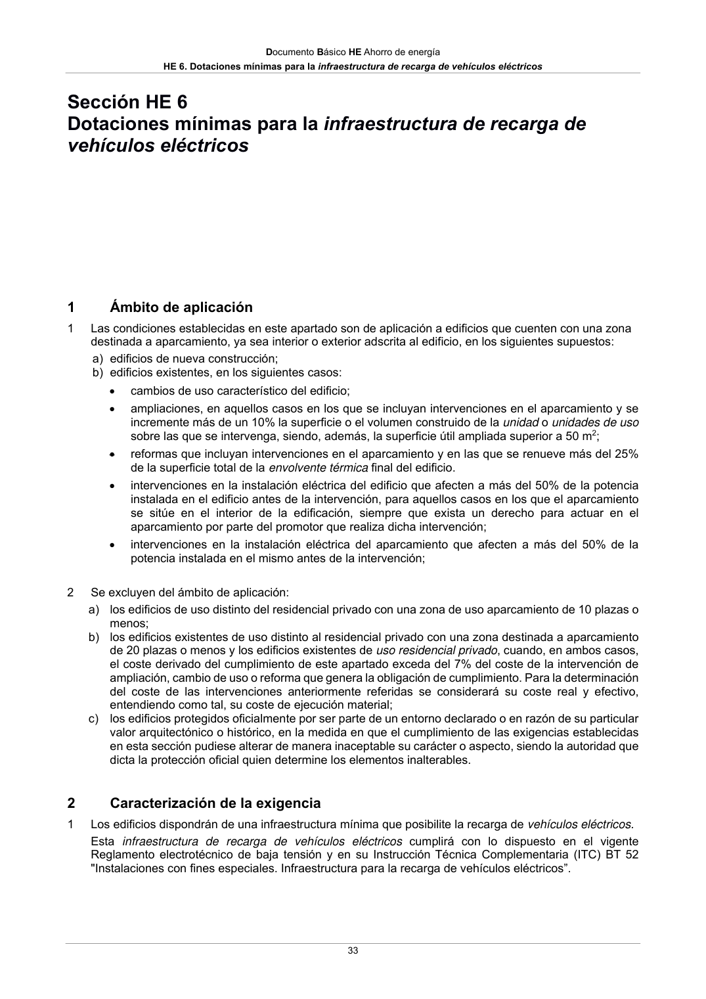

DB-HE · Construcción, mantenimiento y conservación · versión 2022-06-14 · capa oficial
Formatos: JSON compacto · Markdown · PDF fuente
Ámbito del documento · texto del ámbito · documento y tablas
ID técnico a0066 · PDF pág. 32-33 · jerarquía no validada por persona · contrastado con el literal de la página 32 (candidato tipográfico); no validado por persona · padre: a0061
Construcción, mantenimiento y conservación 5.1 Ejecución 1 Las obras de construcción del edificio se ejecutarán con sujeción al proyecto y sus modificaciones autorizadas por el director de obra previa conformidad del promotor, a la legislación aplicable, a las normas de la buena práctica constructiva y a las instrucciones del director de obra y del director de la ejecución de la obra, conforme a lo indicado en el artículo 7 de la Parte I del CTE. 5.2 Control de la ejecución de la obra 1 El control de la ejecución de las obras se realizará de acuerdo con las especificaciones del proyecto, sus anexos y modificaciones autorizados por el director de obra y las instrucciones del director de la ejecución de la obra, conforme a lo indicado en el artículo 7.3 de la Parte I del CTE y demás normativa vigente de aplicación. 2 Se comprobará que la ejecución de la obra se realiza de acuerdo con los controles y con la frecuencia de los mismos establecida en el pliego de condiciones del proyecto. 3 Cualquier modificación que pueda introducirse durante la ejecución de la obra quedará en la documentación de la obra ejecutada sin que en ningún caso dejen de cumplirse las condiciones mínimas señaladas en este Documento Básico. 4 En el Libro del Edificio se incluirá la documentación referente a las características de los productos, equipos y sistemas incorporados a la obra. 5.3 Control de la obra terminada 1 El control de la obra terminada debe seguir los criterios indicados en el artículo 7.4 de la Parte I del CTE. 2 En esta Sección del Documento Básico no se prescriben pruebas finales. 5.4 Mantenimiento y conservación del edificio 1 El plan de mantenimiento incluido en el Libro del Edificio, contemplará las operaciones y periodicidad necesarias para el mantenimiento, en el transcurso del tiempo, de los parámetros de diseño y prestaciones de las instalaciones de generación eléctrica procedente de fuentes renovables. 2 Así mismo, en el Libro del Edificio se documentará todas las intervenciones, ya sean de reparación, reforma o rehabilitación realizadas a lo largo de la vida útil del edificio. Documento Básico HE Ahorro de energía HE 6. Dotaciones mínimas para la infraestructura de recarga de vehículos eléctricos 33

PDF fuente redistribuible: copia fiel enlazada en esta página (SHA256 verificado).